Фенечки прямым плетением плетутся на специальном станке, на противоположных сторонах которого есть прорези для ниток. Правильно закрепив их на станке, можно создать натяжение нитей, которое способствует более удобному плетению браслета. Если у вас нет станка, не расстраивайтесь - многие делают его из коробки из-под сока. На самом деле, можно обойтись и без всего этого, просто закрепив нитки на рабочем месте.
Подробная инструкция плетения изделий на станке представлена справа. Кстати, на станке можно плести не только браслеты, но и кошелечки, чехлы для телефонов, сумочки, закладки и многое другое.
Вот несколько идей для фенечек;)
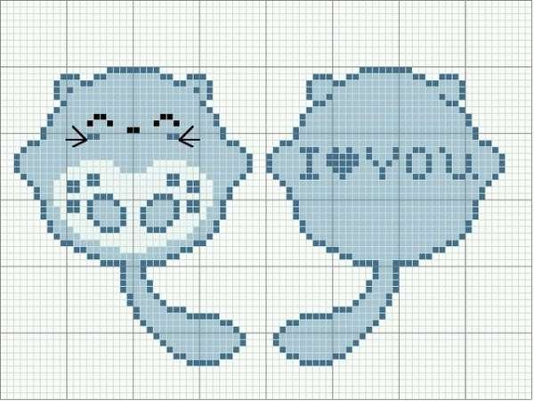 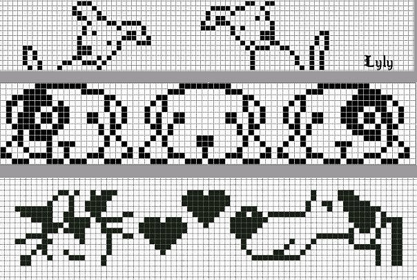 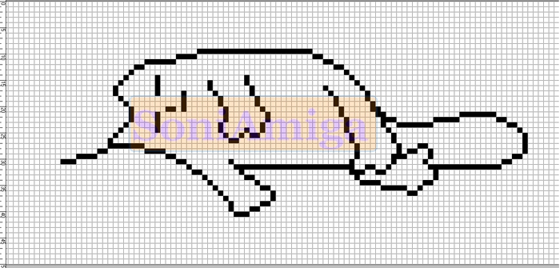 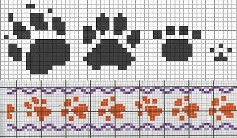 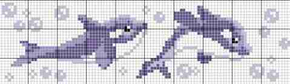 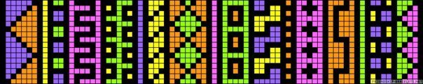 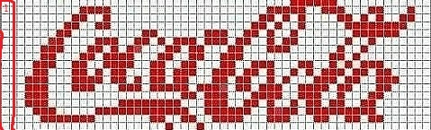 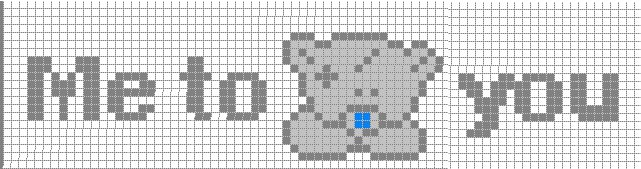 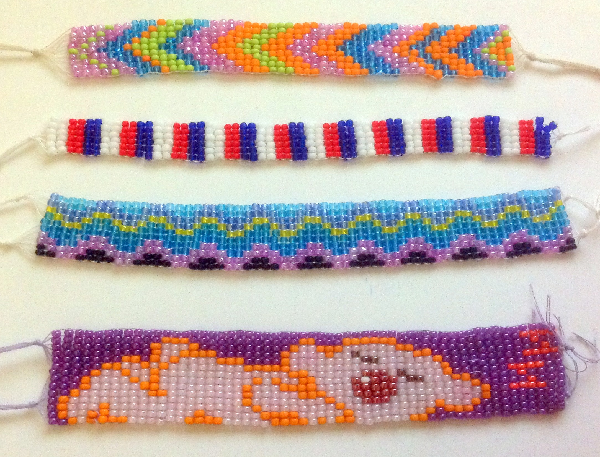 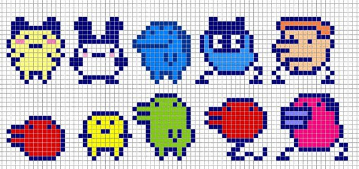 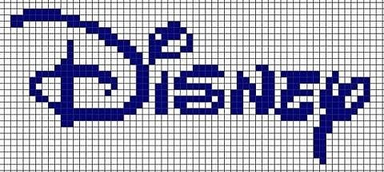
 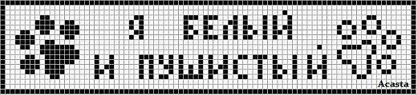
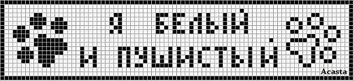